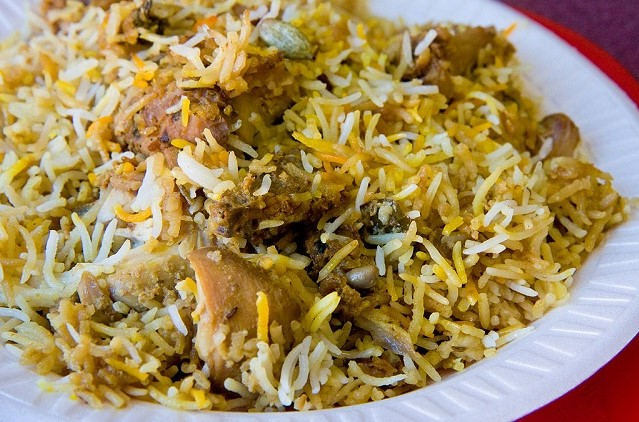

Mindanao is the second-largest and southernmost island in the Philippines, and its cuisine reflects the rich cultural diversity of the region.
Mindanao cuisine is a fusion of indigenous flavors, Spanish influences, and the culinary traditions of various ethnic groups, including the
Maguindanao, Maranao, Tausug, and Lumad peoples. In recent years, Mindanao cuisine has gained recognition for its unique flavors and ingredients.
It's cuisine is characterized by the use of local ingredients, including tropical fruits, vegetables, seafood, and livestock.
Halal cuisine is prevalent due to the Muslim population, featuring dishes like biryani and spiced grilled fish. Spices like sambal,
turmeric, ginger, and lemongrass add robust flavors to many dishes. Traditional Mindanaoan dishes like pianggang and tiyula itum
reflect the region's cultural heritage. Seafood, including tuna and shrimp, is prominent in dishes such as sinuglaw and kinilaw.
Fusion cuisine is emerging, blending Mindanao flavors with modern techniques, and food festivals showcase the region's culinary diversity
while health-conscious choices emphasize fresh, organic ingredients.
Curacha
Photo by hungrybyaheros on Instagram
Curacha is the local Chavacano name given to a species of deep-sea crab commonly found in the waters of Sulu province and waters surrounding Zamboanga City.
To learn more about this dish, click here.
Chicken Piyanggangis a Tausug dish that consists of chicken stewed with blackened coconut meat and the Maranao condiment called palapa (ginger, chilies and sakurab) until tender and then grilled.
To learn more about this dish, click here.
Tiyula Itum
Photo by jbczar on Instagram
Tiyulah Itum is another dish that originates from Sulu. This black soup of slow cooked beef or chicken in burnt coconut broth is usually served during special occasions like Muslim weddings and is known to be one of the dishes served to Royalties.
To learn more about this dish, click here.
Tuna
Photo by bomugs_sizzler.coffee on Instagram
General Santos City or Gensan is popularly known as the “Tuna Capital of the Philippines.” No tourist visits GenSan without indulging in fresh tuna or tuna delicacies served in various restaurants.
To learn more about this dish, click here.
Piyassak
Photo by ilasneerod23 on Instagram
Another burnt coconut wonder, it is the foie gras of the Tausug cuisine, instead of goose liver this uses beef liver instead with lots of spices.
To learn more about this dish, click here.
Tinagtag
Photo by jamie_dorman16 on Instagram
A famous delicacy among Maguindanaons and it is made of ground rice and sugar, mixed with a little bit of water. Locals say this is best eaten with coffee and coco milk.
To learn more about this dish, click here.
Pastil
Photo by angsarap.net
If Luzon has binalot then Mindanao has this, Pastil, another popular breakfast popular breakfast prepared with steamed rice topped with shredded chicken then wrapped in banana leaf.
To learn more about this dish, click here.
Satti
Photo by angsarap.net
It’s a popular breakfast item in Zamboanga made with small bits of grilled meat, served with rice with lots of sauce. Move over tapsilog!.
To learn more about this dish, click here.
Biryani

Photo by bestofmindanao.home.blog
Biryani dish is said to be a food made by the Muslim community in Indian/Persian region. So it’s no surprise that this delicious recipe has made its way to the Muslim community as part Mindanao cuisine. Biryani is basically a fried rice dish with bits of chicken or seafood and other spices.
To learn more about this dish, click here.
Overall, Mindanao cuisine is a flavorful and diverse culinary landscape that reflects the cultural heritage and natural abundance of the region.
Whether you're exploring traditional dishes or contemporary fusion creations, Mindanao offers a wide range of culinary experiences that are sure to
delight food enthusiasts.